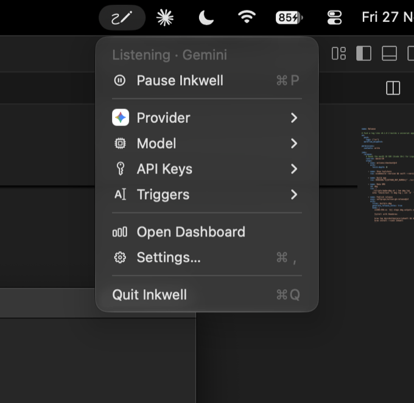
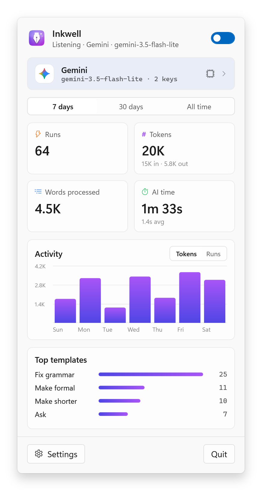
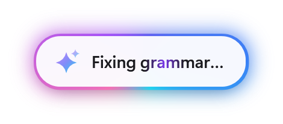

Free AI writing assistant for Mac and Windows · Open source · macOS 14+ · Windows 10 & 11
Fix your writing
without leaving the text box.
End anything you type with ?fix, in any app on your Mac or PC, and Inkwell swaps in the corrected version. It runs on free Gemini and Groq keys, or the Claude and ChatGPT plans you already pay for.
You know the detour.
You wrote something. You want it a little better. Here's what that usually costs.
- Select what you wroteMail
- Copy it⌘C
- Switch to the browser⌘Tab
- Find the ChatGPT or Claude tabBrowser
- Type “fix the grammar in this:”
- Paste⌘V
- Wait, then skim the answer
- Copy the part you need
- Switch back⌘Tab
- Select your draft and paste over it⌘V
And by now you've lost the sentence you were about to write next.
Same result, in the same place, and you never left the text box. ⌘Z brings your original back if you change your mind.
Seven triggers to start with.
Write as many more as you like.
Each trigger is a short instruction you can edit in Settings. It either replaces your text or adds the result underneath.
Works in Mail, Outlook, Slack, Teams, Notes, Notepad, Word, WhatsApp, Safari, Chrome, Edge and almost anywhere else you can type.
No new subscription.
It runs on what you already have.
Inkwell has no account and no server of its own. Your text goes straight from your computer to the provider you choose, and you can switch between them at any time.

Gemini
Free
Get a free key from Google AI Studio in about a minute and paste it into Inkwell.
Groq
Free
Another free key, and very fast. Add it as a second option for when you need one.

Claude Code
Your Claude plan
If you're signed into the claude CLI, you're set. No API key needed.

Codex
Your ChatGPT plan
Signed into the codex CLI? Inkwell uses that same login.
Limits are handled for you. Add more than one key, and pick backup models. When one hits its limit, Inkwell sets it aside until the limit resets and uses the next one, so you almost never see an error. It knows Gemini's daily quota resets at midnight Pacific, waits exactly as long as Groq asks, and recognises Claude Code's 5-hour and weekly limits and Codex's usage limits. When one runs out, Inkwell tells you which limit it was and when it resets, for example "Resets 3:00 PM".
Lives in your menu bar or system tray.
Everything is one click away.
Switch provider, add a key, reorder models or pause Inkwell without opening a settings window.
On the Mac



On Windows



The small things it gets right.
Undo still works
Results are pasted the normal way, so ⌘Z or Ctrl+Z brings back what you wrote. Your clipboard is put back afterwards too.
It won't paste in the wrong place
If you move to another field while it's working, the result goes to your clipboard instead of somewhere you didn't intend.
It only watches for triggers
Inkwell keeps just the last 64 characters you typed in memory, to spot a trigger. Nothing is logged, and password fields are never read.
Your keys stay on your computer
API keys are kept in the macOS Keychain, or encrypted with Windows DPAPI for your account. Usage stats are stored locally and never uploaded.
Stays out of your way
While the AI works, a small pill floats just above the field you're typing in, saying "Fixing grammar…" or "Making it formal…". It never takes focus from what you're typing.
Native on both
Swift and SwiftUI on the Mac, with Liquid Glass on macOS 26. .NET and WPF on Windows, with Mica, Acrylic and Fluent design. No third-party dependencies on either.
Tells you what went wrong
If a key is rejected, a model is busy or a plan limit is reached, Inkwell says which one and what to do next, in plain words, never as an error code.
Quiet in the background
No Dock icon and no taskbar button. Inkwell sits in the menu bar or notification area, and can start when you sign in.
Updates itself
When a new version is out, Inkwell says so and updates in one click, through Homebrew on the Mac or its own installer on Windows. Your settings and keys carry over.
Up and running in two minutes.
Mac
Homebrew
Inkwell isn't notarized by Apple yet, so macOS asks you to confirm the first time. Go to System Settings → Privacy & Security and click Open Anyway.
Windows
Download the installer
Installs for your account in seconds, with no admin prompt. Windows 10 and 11.
Download Inkwell-Setup.exeThe installer isn't code-signed yet, so SmartScreen may ask you to confirm. Click More info → Run anyway.
- Open Inkwell. A pen icon appears in your menu bar on the Mac, or in the notification area on Windows (Windows 11 may tuck it behind the ^ arrow).
- On the Mac, allow Accessibility access when asked. It needs this to read and replace text in other apps. Windows needs no extra permission.
- Click the icon and add a key, or pick Claude Code or Codex if you already use them.
- Type something, end it with
?fix, and watch it change.
Questions
How is Inkwell different from Grammarly?
Grammarly checks as you type and runs on its own account and plans. Inkwell stays quiet until you type a trigger, then uses the model you choose: a free Gemini or Groq key, or Claude and ChatGPT through the plans you already have. Triggers are also yours to write, so it can do far more than grammar.
Why not use Apple's Writing Tools?
Writing Tools need Apple Intelligence, which needs an Apple silicon Mac, and you select text and open a menu each time. Inkwell runs on any Mac with macOS 14 or later, Intel included, and your hands never leave the keyboard.
Is it really free?
Yes. Inkwell itself is free and MIT licensed. Gemini and Groq offer free API keys, which are plenty for everyday writing. If you'd rather use Claude Code or Codex, Inkwell runs on the plan you already pay for, with no extra cost.
Where does my text go?
Only to the provider you picked, and only when you type a trigger. Inkwell has no server, no account and no analytics.
Does it work on Windows?
Yes. Inkwell for Windows runs on Windows 10 and 11 from the notification area, with the same triggers, providers and dashboard as the Mac app. It reads text through UI Automation, needs no extra permission, and installs for your account without an admin prompt.
Does it work in every app?
Almost. It reads text through the system's accessibility API (Accessibility on macOS, UI Automation on Windows), and for apps that don't support that it falls back to select-all and copy. In long documents, use a trigger set to insert below, because replace mode replaces the whole field. On Windows, apps running as administrator need Inkwell to run as administrator too.
What happens when I hit a rate limit or my Claude plan's limit?
Inkwell rests that key or model until its limit resets and uses the next one. For Claude Code and Codex it recognises the 5-hour and weekly plan limits, tells you which one you hit and when it resets, and points you to a provider that's ready instead of retrying in vain.
Which keyboard layouts are supported?
The shortcuts Inkwell simulates on the Mac assume a QWERTY layout for now. On Windows it uses the standard Ctrl+A, Ctrl+C and Ctrl+V, which work on every layout.
Can I see the code?
All of it is on GitHub. Bug reports and pull requests are welcome.